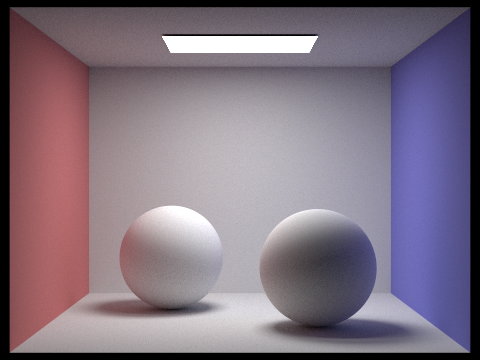

In this project, I implemented a pathtracing renderer to render 3D scenes with realistic lighting. First, I implemented ray generation and scene intersection. In this first part, I generated world oriented rays based on pixel coordinates and implemented the algorithms to calculate the intersections of rays with various geometric shapes. Next, I implemented bounding volume hierarchy to allow the pathtracer to efficiently calculate ray intersections with the modelling scene. Next, I implemented direct and global illumination. For direct illumination, I implemented zero bounce and one bounce radiance algorithms to determine the light emitted from an intersection point and light bounced from a light source directly off a surface. In global illumination, I simply implemented a recursive variation of direct illumination in which I calculated both direct and reflected illumination at a ray intersection. Finally, I implemented adaptive sampling to allow the algorithm to cut down on certain ray tracing calculations by allowing the pathtracer to stop sending rays through a specific pixel if the variation of the returned pixel value was low enough.
For ray generation, I implemented Camera::generate_ray(...) and then PathTracer::raytrace_pixel(...). What these two methods dor is first construct a ray in world space based on a pixel coordinate and then send that ray through the world space to calculate the light that should be returned from the inverse of that ray. For generate_ray, I take in normalized image coordinates and I simply perform a translation and scaling operation on each of the coordinates. This gives me the coordinates in camera space which I then convert to world space by applying the camera-to-world transformation on the new camera space coordinates. I then normalize this vector and generate a ray starting from the pinhole position pos going into the direction of the calculated world space vector direction. This function is then used by the raytrace_pixel function where each pixel coordinate position on the screen is sampled multiple times and the normalized image coordinates are passed into generate_ray to generate a ray in world space to calculate the radiance along that ray. Each time a ray intersects with a primitive in the world scene, the t value of the ray at the intersection, the surface normal at the intersection, the primitive itself, and the bsdf of the primitive at the intersection point are stored in an Intersection object which is used later in the pipeline to determine the properties of light reflection and such.
asdf
The triangle intersection algorithm I implemented was the Trumbore algorithm. The algorithm takes the three triangle points, the ray origin, the ray direction, and performs a series of additions, multiplications, and one division to efficiently calculate the t value of the intersection between the ray and the triangle as well as the barycentric coordinates relative to two of the triangle points. Using this information, we can check for a valid intersection by first calculating the last barycentric coordinate using the two we got and making sure that we are all non-negative. Then, we check to make sure that the intersection time t is actually between the min_t and max_t for the ray. If these conditions are met, then we have a valid intersection and we've already calculated the barycentric coordinates already to interpolate the surface normal using the normals of the three triangle vertices and the barycentric coordinates.
A couple images with normal shading:

In my BVH construction algorithm, I first created a bounding box that contains every single primitive passed into the constructor. Then, if the number of primitives in the node was less than or equal to max_leaf_size, I simply set the node's start and end parameters to the start and end iterator pointers that were passed in as arguments to the constructor. Otherwise, I begin by figuring out which axis of the bounding box is the largest and I perform a split along the middle of that axis. Once I figured out which axis I want to split the primitives by, I sort the primitives along that axis. Then, I grab the iterator pointer that points to the middle of the primitives list and I set the left branch of the bvh node equal to construct_bvh(start of primitives list, middle of primitives list, max_leaf_size) and I set the right branch of the bvh node equal to construct_bvh(middle of primitives list, end of primitives list, max_leaf_size. The heuristic I chose to split the primitives by essentially assumes that the primitives area spaced out volumetrically relatively equally. This way when we split the primitives along the longest bounding box axis, it should theoretically minimize the expected cost to calculate a ray intersection.
Images with normal shading that can only render with BVH acceleration:
Without BVH acceleration, CBlucy.dae and maxplanck.dae wouldn't even render. However, with BVH acceleration, they rendered in less than a second each. For the cow, it took 11 seconds to render without BVH acceleration wherease with BVH acceleration, it ran in less than a second as well.
Walk through both implementations of the direct lighting function.
For direct lighting with uniform hemisphere sampling, I performed Monte Carlo sampling to estimate the radiance along the input ray r. To do so, I iterated through num_samples number of input rays with origin at the intersection point and the ray direction in object space sampled from a uniform hemisphere distribution. For each of these samples, I checked if the ray intersected with any other objects in the scene using bvh->intersect(...). If any of these input rays intersected with an object, I updated the output radiance vector with the emission value of the input ray origin intersection weighted by the reflectance of the output intersection point BSDF (divided by PI) times the cosine of the angle between the input ray and the intersection normal divided by the pdf of a uniform hemisphere distribution (1 / (2PI)). Finally, I updated the output radiance vector by dividing it by the total number of samples.
For direct lighting with importance sampling, I also performed Monte Carlo sampling to estimate the radiance along the input ray r. However, to do so, I iterated over each light source. For each light source, I first checked if it was a point light source. If it was not a point light source, I would sample the light source ns_area_light times where in each sample, I took the emission sample of the light source using light->sample_L(...). This function would then fill in the pointers for the input ray direction in world space, the distance to the light source, and the pdf of the generated direction between the current intersection point and a point on the light source. Using this information, I would check to see if the incoming ray intersected with any objects before reaching the light ray by creating a ray of maximum distance equal to slightly less than the distance between the intersection point and the point on the light. If there was an intersection, then this ray is actually just a shadow ray. If there was no intersection, I then updated the radiance vector with the radiance of the light source sample weighted by the reflectance of the intersection point (divided by PI) times min(0, cosine of the angle between the sample input ray and the intersection normal) divided by the pdf of the sample input ray. If the light source was a point source, I would perform the same calculations except I would only sample once per point light source and multiply this sample by ns_area_light because all samples from this light can only come from one point. I would then return the radiance along the output ray divided by ns_area_light.
Images rendered with both implementations of the direct lighting function (16 samples per pixel):

The following are renderings of CBspheres_lambertian.dae using importance sampling:
In these renders of CBspheres_lambertian.dae, the noise levels in soft shadows were a lot higher at lower light ray levels. As the number of light rays per pixel increased, the soft shadows in the renderings became a lot less noisy and smoother. As the number of light rays increased, you could see more of a gradual gradient in the shadow edges vs the sharp and choppy edges rendered with less light rays.
CBspheres_lambertian.dae rendered with 32 rays per sample and 32 samples per pixel:
Uniform hemisphere and importance sampling produced slightly different results. For the images rendered with uniform hemisphere sampling (espcially at lower ray and sample rates), there was a significant ammount of noise in the rendered image. This is because in uniform hemisphere sampling, many of the samples don't actually end up intersecting with any useful objects that emit light. As a result, some of the pixels rendered with uniform hemisphere sampling will have darker dotted areas where many of the samples didn't intersect with a light source. This is remedied in importance sampling because every incoming ray is sampled from a light source so there is a greater chance that the incoming ray contributes a non zero radiance towards the output radiance. This is why the importance sampled image looks smoother and less noisy than the image generated by uniform hemisphere sampling.
For global illumination, I had to implement at_least_one_bounce_radiance(...) which calculates the output radiance along a ray as a result of multiple bounces of light. To do so, I first created an output vector L_out and set it equal to the one bounce radiance with the ray and intersection object passed in as arguments. Then if the ray depth was greater than zero, I would create a new intersection object and sample an incoming ray with depth r.depth - 1 and check if this sampled incoming ray intersected with the world. If it did, I would recursively call at_least_one_bounce_radiance with this sampled ray and add the recursively sampled radiance to L_out weighted by the current intersection bsdf radiance times the cosine of the angle between the sampled incoming ray and the intersection normal divided by the sampled ray pdf. I then added another termination factor where the recursive call to at_least_one_bounce_radiance would break with probability .6. The only change to the code implementation after the new added termination factor was that the output radiance vector would be divided by .6 before returning.
Some images rendered with global illumination and 1024 samples per pixel:

CBbunny.dae rendered with only direct illumination and then only indirect illumination at 1024 samples per pixel:
Looking at the rendered image of CBbunny.dae with only direct lighting vs only indirect lighting, the direct lighting version looks like what you expect. It looks exactly like the image produced in part 3. However, the indirect lighting version looks a little different. The overall illumination of the image is less than that of the direct lighting rendering and the light and dark spots look almost inverted when compared to the direct lighting rendering of CBbunny.dae.
CBbunny.dae rendered with four rays per sample and 1024 samples per pixel:
Between max_ray_depth of 1, 2, 3, and 100, there isn't a huge difference between the rendered image. The only noticeable difference is that the shadow gets slightly and slightly brighter with the increasing number of ray depth. However, this slight increase in brightness becomes less and less noticeable the higher the depth goes. The biggest different in image rendering quality is between a depth of zero and 1. In the zero depth image, there is only direct illlumination which means all areas of the image that aren't directly in the light's path have harsh, dark shadows.
wall-e.dae rendered with various sample-per-pixel rates using 4 light rays:
The rendered views look drastrically different with different samples per pixel. As the number of samples per pixel increases, the ammount of noise per image decreases.
When using a high rate of samples per pixel, many computations are unnecessary. As the number of samples increase or for image pixels that don't change much after repeated sampling, it's possible to stop the sampling of the image at that pixel to conserve compute while achieving image qualities nearly indistinguishable from the full sample rate render. To implement this adaptive sampling, I simply implemented a checked at every samplesPerBatch in raytrace_pixel if the samples generated thus far achieved a tolerance below the intended threshold. If the tolerance was below, I would just simply return the pixel at that moment. If not, I would continue the sampling algorithm. The way the tolerance was checked was using this formula: where . mu represents the mean of the samples, sigma represents the standard deviation of the samples, and n represents the number of samples. To calculate mu and sigma, I kept two running variables s1 and s2. s1 is a running sum of the samples and s2 is a running sum of the squared samples. and .
You can clearly see that in regions under direct light, the sampling rate is much lower than the areas where there is light but you can clearly tell it's not direct light from a light source. This makes sense because as you increase the number of samples, the pixels that have values most likely to change are the ones that have complex interactions with the light bouncing around the room. As a result, the corners of the room and the folds on the bunny's body require the most ammount of computation to accurately portray the complex light reflections happening in the scene.